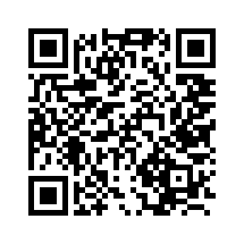

Австрия Ключ: установка Android
ТСН «Астрия». Поддержка: info@kk-austria.info.
Инструкция по установке через Google Play. Поддерживается Android 8.0 и новее. Первый публичный выпуск 1.0.3 проходит проверку Google. Если магазин пока недоступен, используйте отдельный APK по ссылке ниже.
Android-сборка 16 не требует аппаратной геолокации для установки. GPS-координаты не читаются; системное разрешение старых Android для поиска Bluetooth сохраняется.
Открыть «Австрия Ключ» в Google Play. Для обычной установки не нужно вступать в группу или становиться тестировщиком.
Подготовка
Для загрузки через Google Play нужны интернет и аккаунт Google. Если аккаунтов несколько, проверяйте выбранный профиль через значок пользователя.
Для использования приложения «Австрия Ключ» Google-аккаунт не требуется. Приложение открывает калитку по Bluetooth и работает без интернета.
Первый рабочий выпуск предназначен для страны профиля Россия. Если этот способ установки вам не подходит, см. раздел «Установка без Google Play» ниже.
Установите приложение из Google Play
- Откройте карточку «Австрия Ключ» в Google Play на телефоне.
- Нажмите «Установить» или «Обновить».
- При первой установке откройте приложение и добавьте ключ доступа, полученный от администратора. При обновлении существующий ключ сохраняется.
Не удаляйте рабочее приложение или его данные ради установки другой версии. Это может удалить сохранённый ключ. Старый активированный QR не восстановит доступ после удаления ключа. Если Android не разрешает обновление, сначала обратитесь к администратору.
Установка приложения сама по себе не даёт доступ к калитке. Нужен QR-код или файл ключа от администратора.
Если нет доступа или установки
- Страница Google Play сообщает «Приложение недоступно» или «Нет доступа»
- Проверьте аккаунт магазина, страну профиля и версию Android. Пока первый рабочий выпуск не доставлен магазином, используйте APK по ссылке ниже. Если доступ не появился, обратитесь в поддержку.
- Приложение уже установлено из APK
- Подпись Google Play может отличаться от подписи отдельного APK. Не удаляйте приложение и ключ ради перехода в магазин; если обновление недоступно, продолжайте использовать прежний способ установки и обратитесь к администратору.
- Приложение установлено, но калитка не открывается
- Проверьте, что добавлен ключ доступа и включён Bluetooth. Подойдите к калитке и следуйте инструкции приложения.
Необязательное тестирование
Этот раздел только для желающих проверять будущие версии. Для обычной установки из Google Play он не требуется.
Вступите в группу тестировщиков, затем тем же аккаунтом откройте страницу участия в тестировании и подтвердите участие.
Пользуйтесь тестовой версией и сообщайте об ошибках и своих впечатлениях. Без доступа к калитке можно проверить режим демонстрации и настройки. Google Groups недоступен для детских аккаунтов младше 13 лет; для установки обычной версии группа не нужна.
При сообщении об ошибке укажите модель телефона, версию Android и приложения, что вы делали и какое сообщение появилось. Не присылайте ключ доступа или личные уведомления на снимках. Поддержка: info@kk-austria.info.
Установка без Google Play
Если Google Play недоступен, используйте установку из APK-файла. Для этого способа Google-аккаунт не требуется.
Детям от 9 лет с установкой и получением ключа помогает родитель или другой законный представитель. Если приложение уже работает, не удаляйте его ради перехода на другой способ установки.
QR этой инструкции
Отсканируйте обычной камерой, чтобы открыть эту инструкцию на телефоне. Это не ключ доступа к калитке.

Документы
Политика конфиденциальности · Условия использования · Инструкция пользователя.